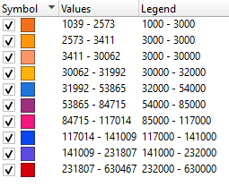

Covid-19 in India data Mapping
(Based on Active Cases)
This webApp contain the live information about the covid Activity in India. The data updated every after 2 hours. When you hover on different states of India the colour of states Change accesskey if you click on any state then it will display data to get the information about the data refer the attribute table (Data Index) which has different colour for different fields accesskey accesskey the colour to the state is given based on active COVID-19 cases.